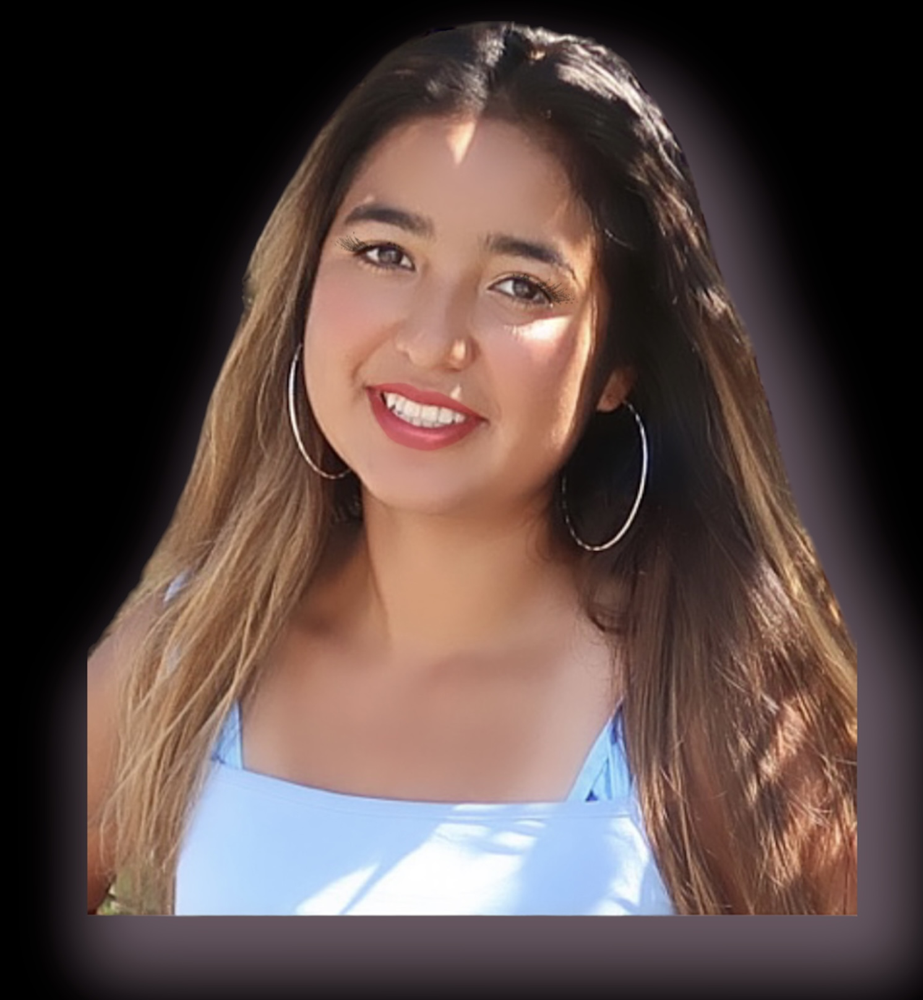

Brisa Ramos

San Clemente, CA | (949)-813-7943 | Linkedn
Summary
I am a hardworking and passionate individual who strives to improve in their everyday lives. I value family and animals.
Education
Western Governors University | Millcreek, Utah
Bachelor’s of Science, Marketing
Work Experience
TikTok Influencer
- Experienced in collaborating with brands for sponsored content and marketing
campaigns, ensuring authenticity with both personal and brand values.
-
Outlier AI Researcher
August 2023 - Present
- Help train and improve artificial intelligence (AI) models by providing data, evaluating performance, or generating training data within their specific domain, often on a flexible, project-based schedule; essentially, it's a remote, freelance role focused on contributing to AI development through specialized knowledge
Leadership & Involvement
- Medical Translator - Flying Samaritans Organization
- I am responsible for accurately translating medical documents, patient communications, and healthcare-related materials from one language to another.
Skills & Interests
Languages:English, Spanish
Hobbies: Running, Cooking, Travel